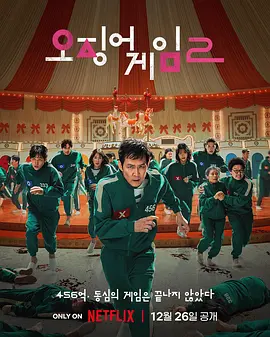

6.4
鱿鱼游戏 第二季
Squid Game Season 2
2024
韩国
评分 6.4
导演:
黄东赫
演员:
李政宰 / 李炳宪 / 魏嘏隽 / 孔刘 / 任时完
类型:
剧情,悬疑,惊悚
剧情简介
三年过去，成奇勋依然被那场致命游戏的阴影紧紧缠绕。他原本计划离开韩国，试图开始新的人生，却在登机前因突如其来的执念改变方向，再次面对曾经的黑暗深渊。熟悉的恐惧感重新笼罩，他选择追查幕后组织，希望揭开游戏背后的真相。然而尚未接近目标，新的邀请便将他再次推入那处封闭却精心构造的竞技场。第二季中，游戏规模更紧凑、规则更冷酷。全新的参赛者带着各自的秘密与伤痕步入赛场，他们来自不同背景，却同样被现实压得无路可走。在限制空间里，每个人都被迫直面恐惧与贪欲，结盟、背叛、怀疑随时可能发生。看似简单的关卡被改造成残酷的心理对抗，失败的代价依旧是生命。鲜亮场景与暴力冲突形成强烈反差，让每一步都充满不确定。与此同时，李炳宪饰演的“前任胜者”继续掌控局面，他的动机逐渐显露，与成奇勋之间的对峙也愈发紧绷。孔刘饰演的招募者再次出现，成为连接外界与游戏的重要线索。随着调查不断深入，成奇勋越来越接近组织的核心，却也陷入更危险的境地。真相与复仇、理智与疯狂在他心中纠缠，使这场回归之旅变得更加沉重。第二季以更强的压迫感呈现濒死竞争，也在绝望与求生之间挖掘人性的脆弱与挣扎。每位参赛者在残酷选择中暴露本性，推动故事走向更黑暗却更复杂的方向。